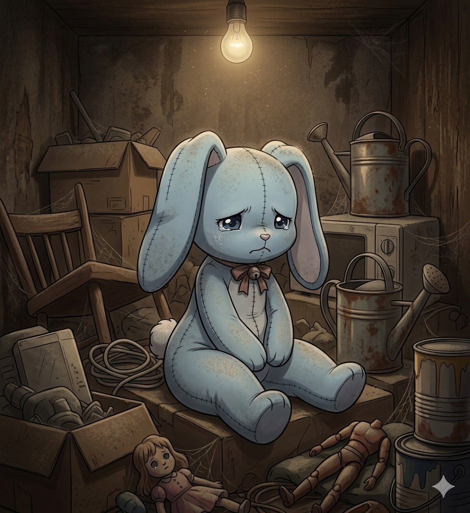
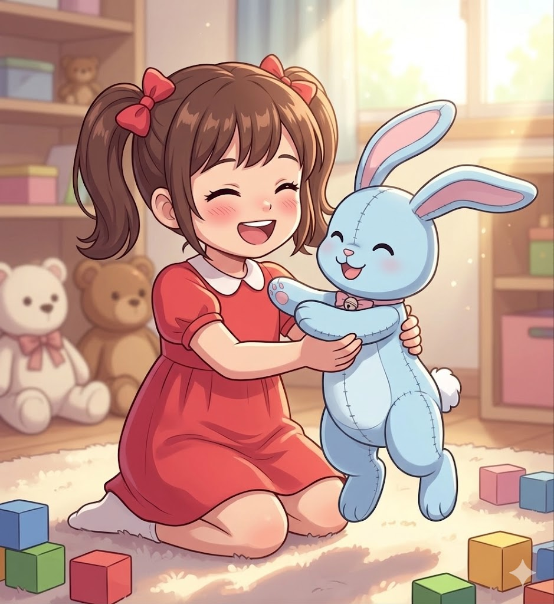

Nono's tale of heartbreak
to healing
Nono's story is one of heartbreak and healing. After being created by Celia, Nono was given to a young girl named Helen. The two quickly formed a deep bond, and Nono became Helen's constant companion. However, tragedy struck when Helen's parents found out Nono was alive, and fearing her, they took her away from Helen, locking her in the storage room.
Heartbroken and alone, Nono was left to sit in darkness alone for years. Some time after Helen moved away, her parents held a garage sale. This is where Ben, an avid plush collector, found Nono and took her home with him. Ben's initial discovery of Nono's sentience was a moment of wonder and fear, but after spending time with her, and learning of her tragic past, the two formed an unshakeable bond.
Together, Nono and Ben embarked on a journey of healing and self-discovery. Nono's presence brought comfort and joy to Ben's life, while Ben's love and care helped Nono heal from her past traumas. Their story is a testament to the power of friendship and the resilience of the human (and plush) spirit.